Total Questions: 18
Extraction Time: 2025-09-10 07:41:38.338451
ID: 6406531043192
Question: ARE YOU SURE YOU HAVE TO WRITE EXAM FOR THIS SUBJECT?
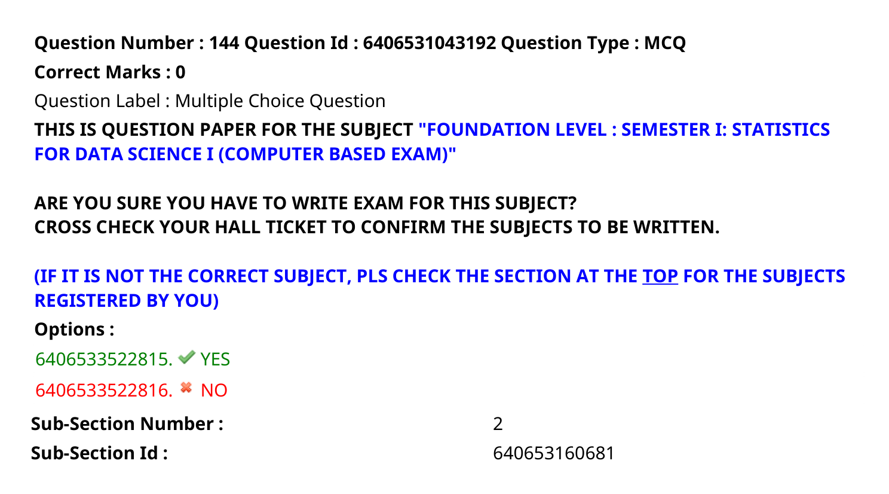ID: 6406531043194
Question: What is the difference between the expenditure on Groceries and Utilities?
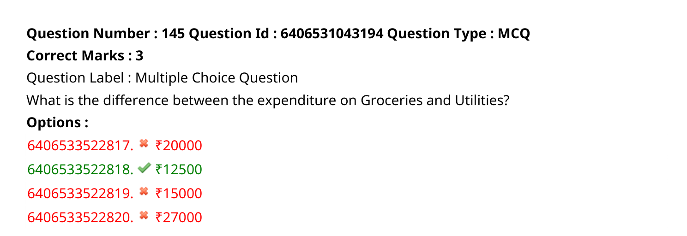ID: 6406531043195
Question: How much money does the family spend on Rent and Utilities combined?
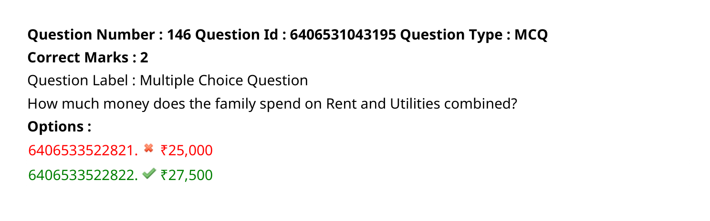ID: 6406531043196
Question: Which of the following options is/are incorrect for a variable having ratio scale of measurement?
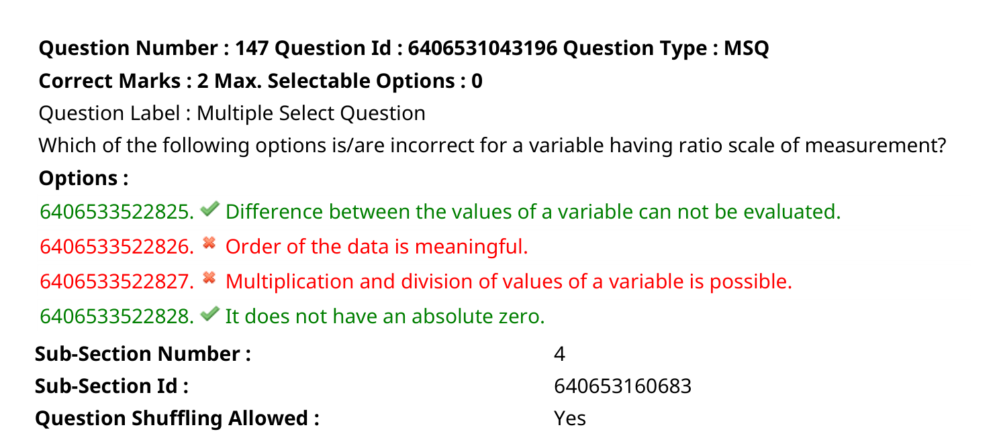ID: 6406531043197
Question: average of the last 8 observations is 53, what is the value of the 8th observation?
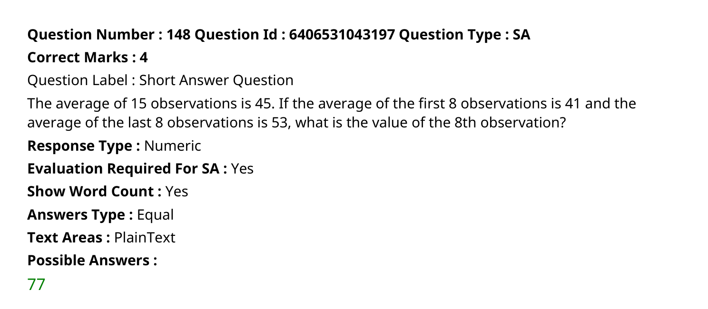ID: 6406531043209
Question: probability that it will continue to function for at least another 100 hours?
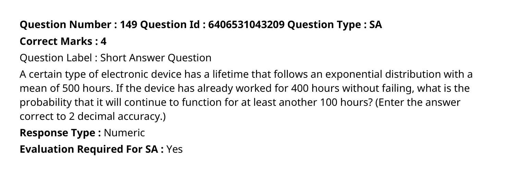ID: 6406531043199
Question: In how many ways can the team be formed if two particular students must be included?
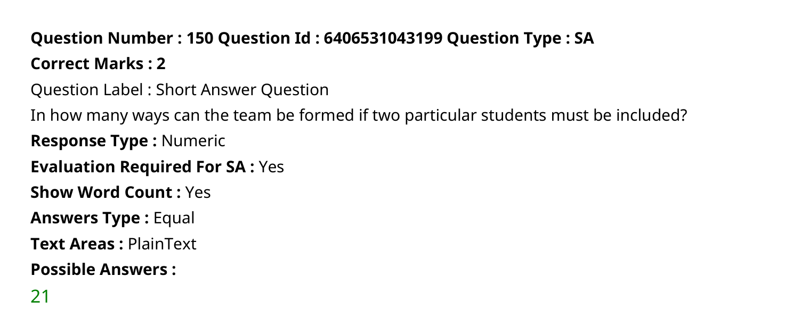ID: 6406531043200
Question: In how many ways can the team be formed if two particular students must not be included?
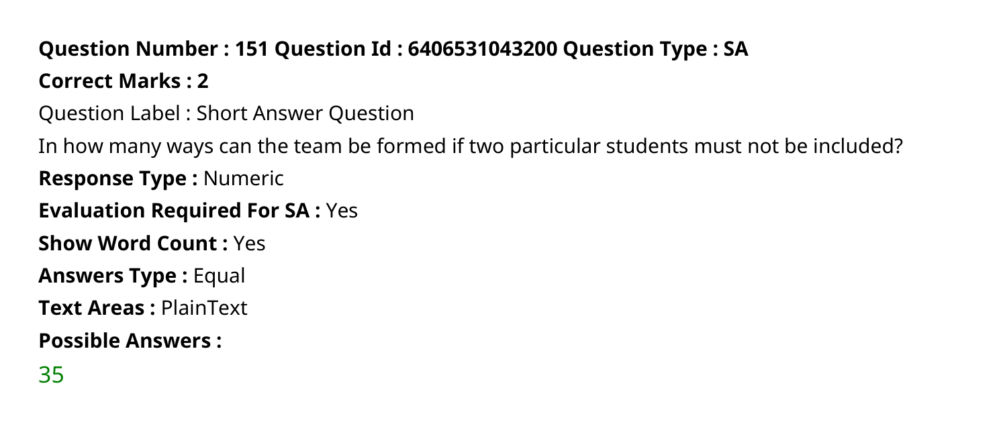ID: 6406531043201
Question: vowels always come together?
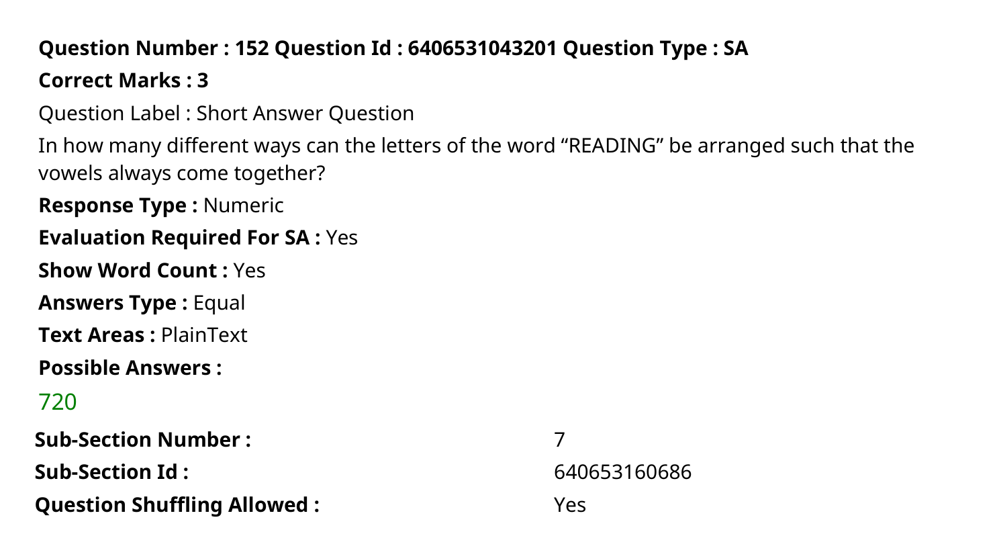ID: 6406531043202
Question: probability that a person chosen at random likes either tea or coffee?
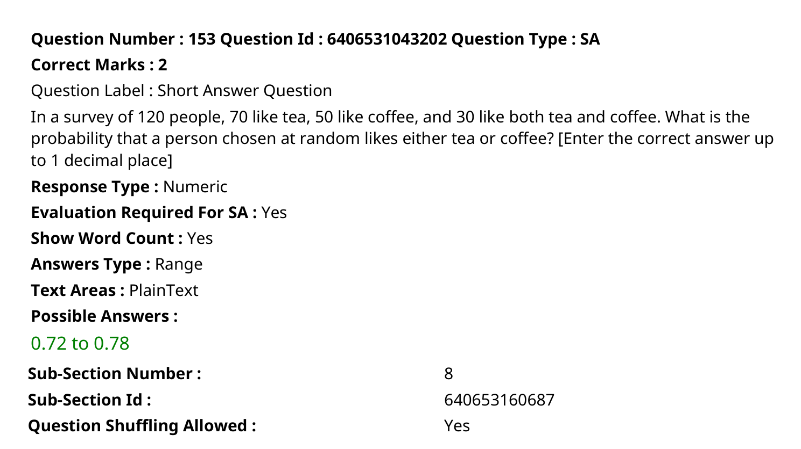ID: 6406531043203
Question: blue. Which of the following statement(s) is(are) true?
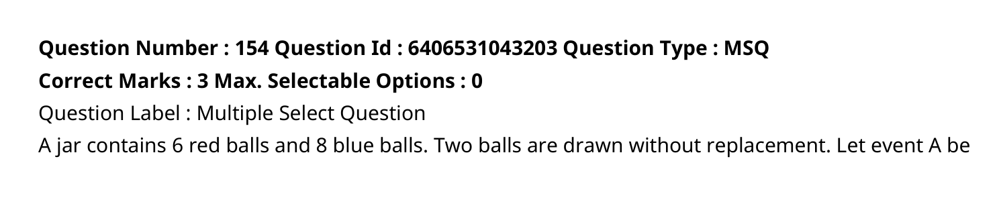ID: 6406531043212
Question: What are the options for question number 155?
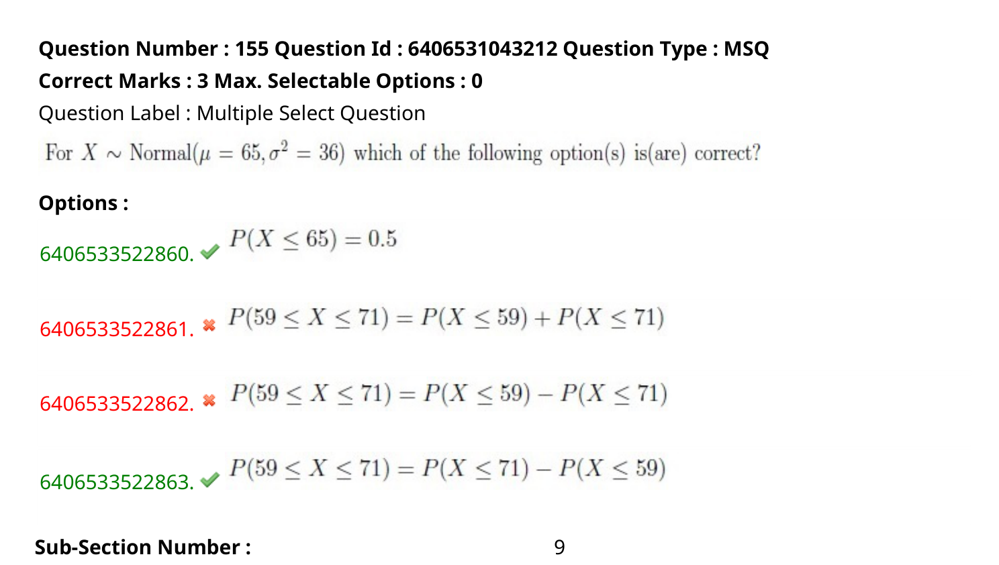ID: 6406531043205
Question: What is the correct option for question number 156?
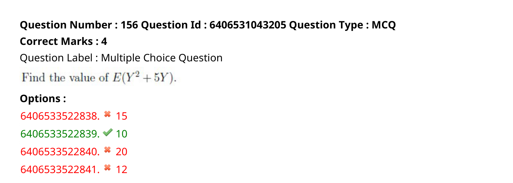ID: 6406531043206
Question: What are the possible answers for the short answer question?
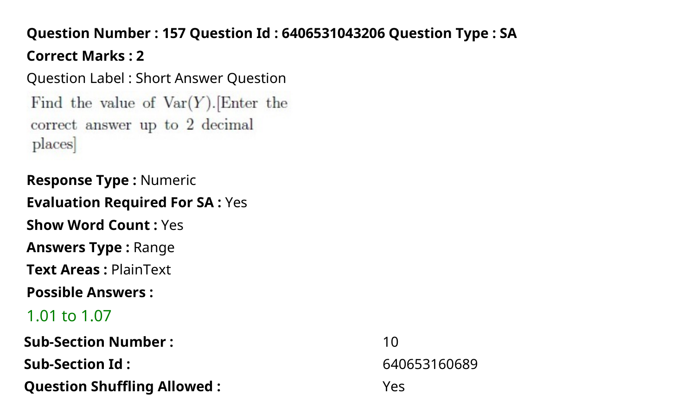ID: 6406531043207
Question: least 4 matches?
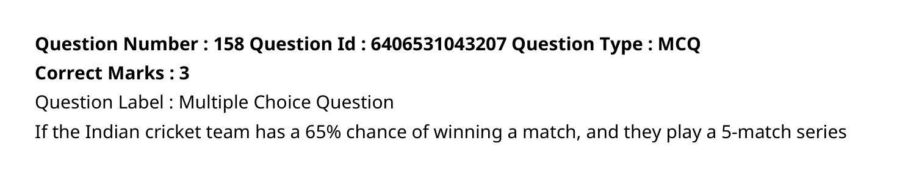ID: 6406531043208
Question: What is the correct option for question 159?
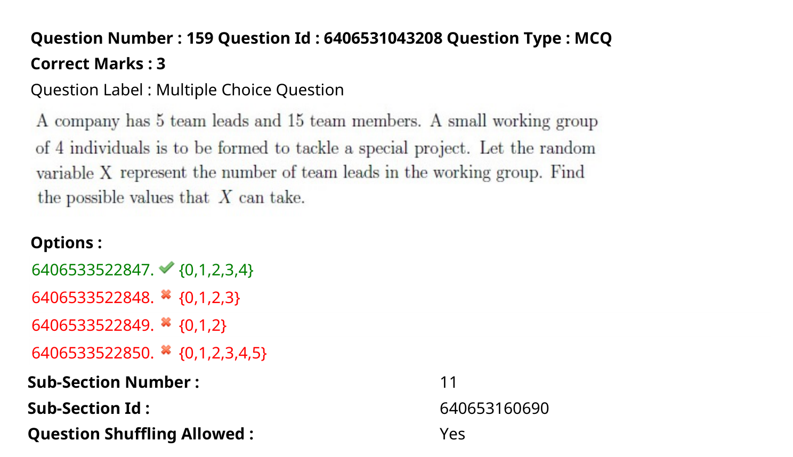ID: 6406531043210
Question: What is the probability that exactly 5 customers will enter the store in a 15- minute period?
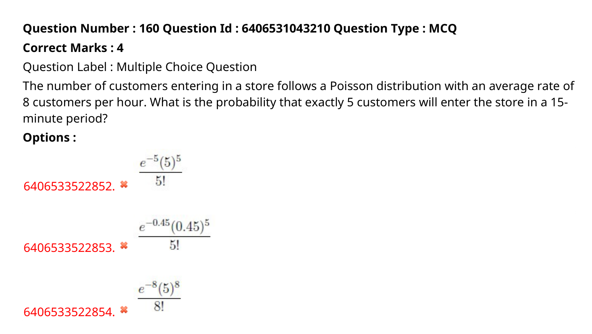ID: 6406531043211
Question: metro station at random, then what is the probability that he has to wait at least 4 minutes?
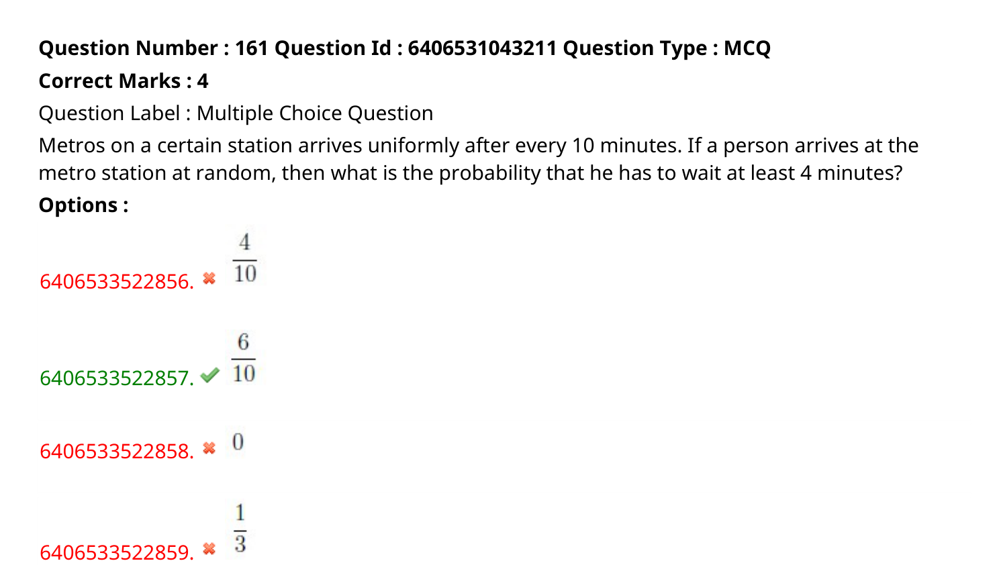